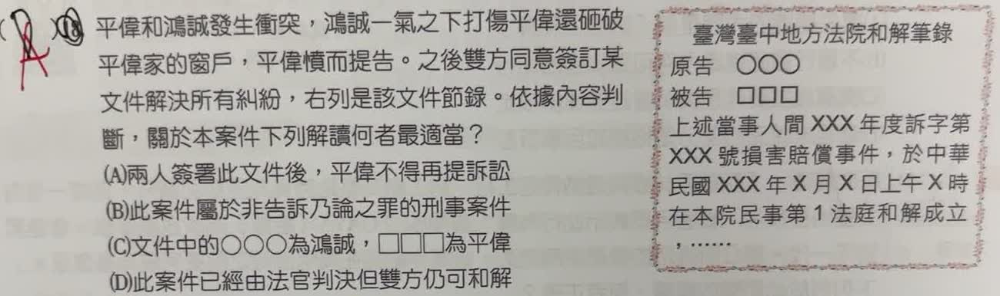

分享原卷｜第 18 題
完整原題
作答所需文章／材料
【原題文件節錄】 臺灣臺中地方法院和解筆錄 原告 ○○○ 被告 □□□ 上當事人間XXX年度訴字第XXX號損害賠償事件，於中華民國XX年X月X日上午X時在本院民事第1法庭和解成立，……平偉和鴻誠發生衝突，鴻誠一氣之下打傷平偉還砸破平偉家的窗戶，平偉憤而提告。之後雙方同意簽訂某文件解決所有糾紛，右列是該文件節錄。依據內容判斷，關於本案件下列解讀何者最適當？
(A) 兩人簽署此文件後，平偉不得再提訴訟
(B) 此案件屬於非告訴乃論之罪的刑事案件
(C) 文件中的○○○為鴻誠，□□□為平偉
(D) 此案件已經由法官判決但雙方仍可和解
先想一想，再查看答案、解說與原圖
原卷作答：B
正確答案：A。文件是法院民事法庭的和解筆錄；有效成立後，就已和解的同一民事爭議，不能只因反悔而重新起訴。
逐項解析
| 選項與原句 | 判讀 | 句意與判斷理由 |
|---|---|---|
| (A) 兩人簽署此文件後，平偉不得再提訴訟 | 應選 | 文件是法院民事法庭的和解筆錄；有效成立後，就已和解的同一民事爭議，不能只因反悔而重新起訴。 |
| (B) 此案件屬於非告訴乃論之罪的刑事案件 | 不選 | 文件明載損害賠償事件及民事法庭，不能把本件直接歸為非告訴乃論的刑事案件。 |
| (C) 文件中的○○○為鴻誠，□□□為平偉 | 不選 | 平偉提告請求賠償，為原告○○○；被告□□□才是鴻誠。 |
| (D) 此案件已經由法官判決但雙方仍可和解 | 不選 | 和解與判決不同；和解成立不表示法官已先作成判決。 |
詳細說明與解題步驟
一、先看文件名稱與法庭
文件名稱為「臺灣臺中地方法院和解筆錄」，內容又寫「損害賠償事件」「民事第1法庭和解成立」，因此這裡是法院民事訴訟上的和解。
二、有效和解可以終結爭議
依民事訴訟法第380條，訴訟上和解成立的效力與確定判決相同。原則上，平偉不能針對同一已和解的民事爭議，只因反悔就重新起訴，所以A最適當。這不是說他永遠不能提出任何其他訴訟；和解若有無效或得撤銷原因，法律也另有救濟。
三、民事賠償與刑事責任分開看
打傷人、砸破窗戶可能另有刑事問題，但這份文件處理的是損害賠償。不能只看到打人就忽略文件上的民事法庭，也不能因此推定所有可能刑事責任都自然消失。
四、確認當事人與程序
提告的平偉是原告，鴻誠是被告。和解是雙方在程序中達成協議，不是法官已經判決；D把兩種程序混為一談。
核對依據：民事訴訟法第380條。
https://law.moj.gov.tw/LawClass/LawSingle.aspx?pcode=B0010001&flno=380
核對註記：已核對題幹、全部選項與必要材料；教材對應課次未確認，歸綜合。
原圖（僅本題）
